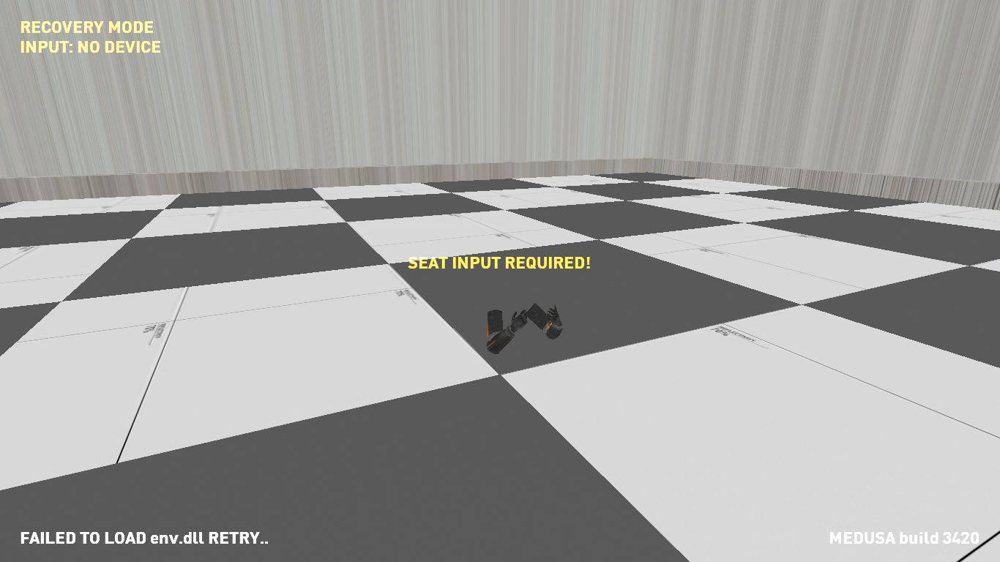
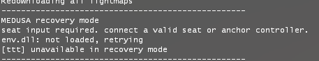

←Back To Main Page
Medusa Recovery Mode

A photo of the sanddollar server with MRM (Medusa Recovery Mode) enabled
After we got past the first seat input message, the server returned a few months later and it was password protected, a few days later it became accessible for use and we found out that a specific recovery-like mode was enabled.
A visible UI with only text labels had appeared, On the bottom left corner it said "Failed To Load env.dll", on the bottom right it displayed the current build of medusa that dan is using, (Medusa is a sourcemod built by dan. we do not know what it fully does). In the top left it read "Recovery mode" and "Input: No device."
We seem to think that env.dll is what connected the server to the website, and is what made the env_commands appear, it seems to be an essential file for sanddollar being able to run

It also searched for "TTT" which in gmod terms, stands for Trouble In terrorist Town. a gamemode built-in to gmod, we still do not fully know what it means for SANDDOLLAR though.